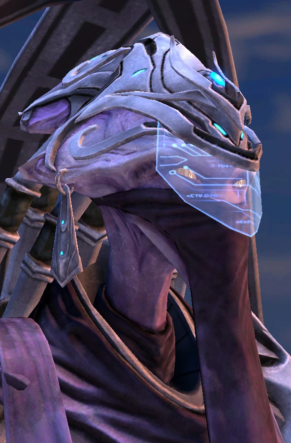

Оракл
| Оракл | |
|  | |
| Информация о юните | |
| Тип: | Возудшная единица |
| Описание: | Летающий заклинатель. Может использовать способности Stasis Ward, Envision и Activate Pulsar Beam. |
| Построен из: | Звездные врата |
| Стоимость: |  150 150  100 100  37 37  3 3 |
| Горячие клавиши: | E |
| Атака: Пульсирующие лучи | |
| Цели: | Наземные |
| Урон | 15 |
| DPS: | 24.4 |
| Перезарядка: | 0.61 |
| Бонус: | +7 по легким единицам |
| Бонус DPS: | +11.5 против легких единиц |
| Ранг: | 4 |
| Статистика юнита | |
| Защита: |  100 100  60 60  0 (+1) 0 (+1) |
| Атрибуты: | Механический Бронированный Псионик |
| Энергия: | 50/200 |
| Зрение: | 10 |
| Скорость: | 5.6 |
| Силен против: | КСМ Дрон Зонд |
| Слаб против: | Викинг Муталиск Феникс |
Обзор
Оракул — псионический боевой корабль. Это маневренные вспомогательные суда, оснащенные одними из самых передовых технологий протоссов из существующих. Пилоты Оракула происходят из ордена молодых неразимов, посвятивших себя пониманию и управлению временем. Их способности позволяют им рассчитывать, как и когда использовать свои корабли, чтобы наиболее эффективно выиграть битву. Орден считает, что может изменить судьбу расы протоссов. Среди их способностей — временное зрение, форма манипулирования временем, которая дает пилотам возможность обнаруживать скрытых врагов без необходимости использования специализированных систем обнаружения.
Дизайн
Оракулы несут в себе эстетику неразимов с их серебристо-голубыми корпусами и зеленым свечением. Их ядро генерирует варп-поле огромной мощности, содержащее большое количество хаотической энергии, которая затем направляется в сложную сеть миниатюрных кристаллов и псионически восприимчивых моноволокон. Поток сырой энергии разделяется и стабилизируется по мере того, как он течет по сети, снабжая энергией системы Оракула. Активация системы вооружения корабля создает отверстие в варп-поле. Необработанная энергия течет через наборы простых фокусирующих кристаллов, которые превращают каждый хаотический разряд в когерентный разряд. Выстрелы из луча пульсара кипят с невероятной силой и предназначены для нанесения тяжелых повреждений наземным целям.
У оракула нет центрального компьютера, который занимался бы мелочами навигации и наведения. Вместо этого он оснащен многоузловым концентратором, который напрямую связывает пилота с кораблем. Пилоты полагаются исключительно на свое временное мастерство, чтобы направлять смертоносные залпы луча пульсара корабля.
История
Технологии, которые заложили основу для оракула, были исследованы во время изгнания неразимов с Айура, поскольку их исход позволил им экспериментировать с новыми технологиями. Сам корабль был разработан протоссами после первой фазы Второй Великой войны, чтобы максимизировать эффективность их военной машины против врагов. Несколько оракулов попали под контроль Амона во время Конца Войны и были развернуты для нападения на Даэлам защищает краеугольный камень на Айуре.
Завидуя светскому господству неразимов, талдаримы украли несколько оракулов и ревностно охраняли лорды флота, контролирующие их. К концу Войны талдаримы использовали оракулов. Оракулы Defenders of Man Insurgency имели особый дизайн. Между тем, умные фазовые кузнецы Кхалаи смогли разработать свои собственные версии оракулов, несмотря на множество проблем проектирования. Ихан-рии развернули собственные варианты оракула.
Во время восстановления цивилизации протоссов на Айуре Кхалаи начал переделывать технологии неразимов, такие как оракулы, в стиле Золотого века экспансии, к большому гневу некоторых неразимов. Матриарх Воразун отказался комментировать эту практику.
Игровая единица
Оракул предназначен для разведки, беспокойства и экономических потрясений. Это позволяет игрокам-протоссам использовать более агрессивную тактику рейдов, чем в предыдущих играх.
Способность оракула к откровению дает ему некоторое совпадение с наблюдателем, учитывая то, что и юнит, и способность функционируют как форма обнаружения. В то время как наблюдатель преуспевает в общей наблюдательности, откровение является полезным противодействием в определенных обстоятельствах, например, при работе с люркерами и банши с улучшенной скоростью.